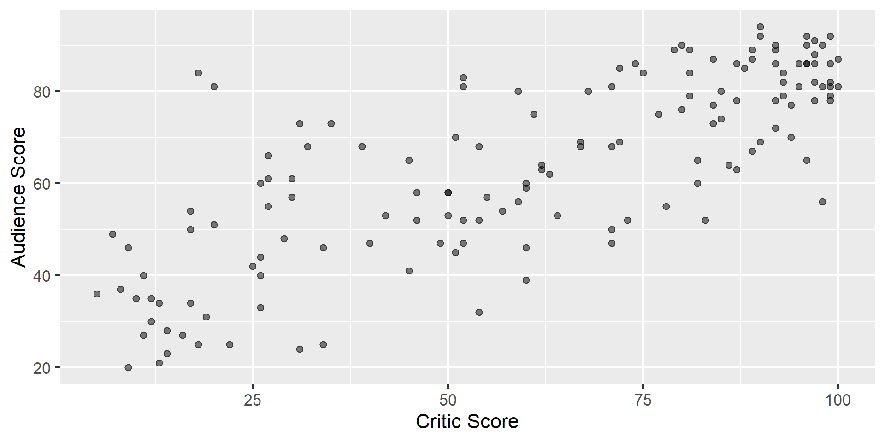
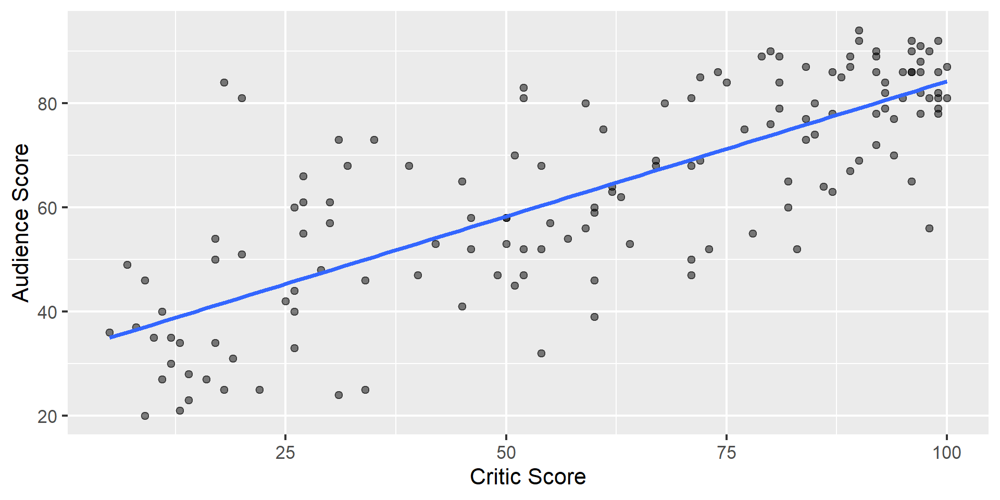
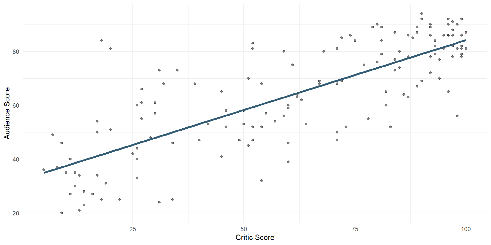
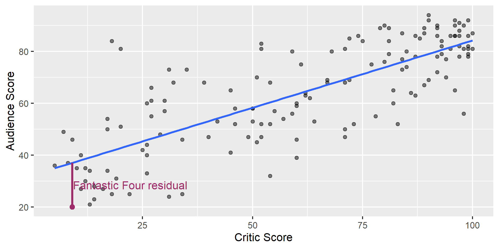
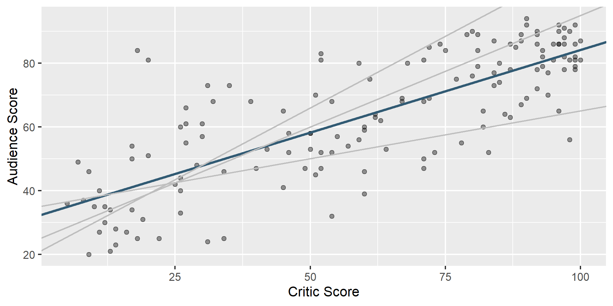
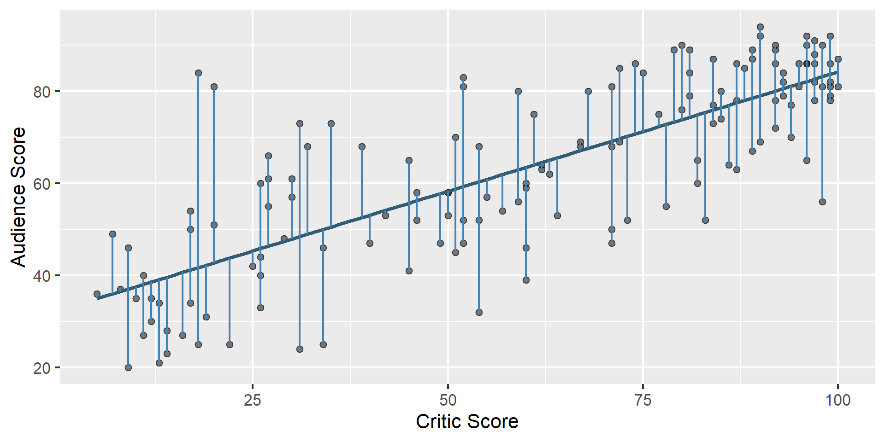

Lecture 12
Ramapo College
October 26, 2026
Play the game a few times and report your score: smallest absolute difference between your guess and the actual correlation, e.g., if the actual correlation was 0.8 and you guessed 0.6, your score would be 0.2. If the actual correlation was -0.4 and you guessed 0.1, your score would be 0.5.
A regression model separates an observed outcome into a systematic part and an unexplained part:
\[ \begin{aligned} Y &= \text{Model} + \text{Error} \\ &= f(X) + \epsilon \\ &= \mu_{Y \mid X} + \epsilon \end{aligned} \]
A linear regression model describes the relationship between a quantitative outcome, \(Y\), and a quantitative predictor, \(X\):
\[ Y = \beta_0 + \beta_1 X + \epsilon \]
We use data to estimate the population relationship:
\[ \widehat{Y} = b_0 + b_1 X \]
Note
There is no error term in the fitted line: \(\widehat{Y}\) is the model’s prediction, not an observed outcome.
# A tibble: 146 × 3
film critic audience
<chr> <int> <int>
1 Avengers: Age of Ultron 74 86
2 Cinderella 85 80
3 Ant-Man 80 90
4 Do You Believe? 18 84
5 Hot Tub Time Machine 2 14 28
6 The Water Diviner 63 62
7 Irrational Man 42 53
8 Top Five 86 64
9 Shaun the Sheep Movie 99 82
10 Love & Mercy 89 87
# ℹ 136 more rowsDescribe the relationship between film critics’ scores and audience scores

`geom_smooth()` using formula = 'y ~ x'
# A tibble: 2 × 5
term estimate std.error statistic p.value
<chr> <dbl> <dbl> <dbl> <dbl>
1 (Intercept) 32.3 2.34 13.8 4.03e-28
2 critic 0.519 0.0345 15.0 2.70e-31\[ \hat{Y} = b_0 + b_1 X \] \[\widehat{\text{audience}} = 32.3 + 0.519 \times \text{critic}\]
Reading the model equation
Predicted audience score is 32.3 plus 0.519 times the critic score.
The slope of the fitted model is 0.519. Which of the following is the best interpretation of this value?
\[\widehat{\text{audience}} = 32.3 + 0.519 \times \text{critic}\]
The intercept of the fitted model is 32.3. Which of the following is the best interpretation of this value?
\[\widehat{\text{audience}} = 32.3 + 0.519 \times \text{critic}\]
The intercept is meaningful in context if:
Here, observed critic scores range from 5 to 100.
The intercept is meaningful in context.
Use the linear model to predict the audience score for a movie with a critic score of 75.
\(\widehat{\text{audience}} = 32.3 + 0.519 \times \text{critic}\)
\(\widehat{\text{audience}} = 32.3 + 0.519 \times 75\)
\(\widehat{\text{audience}} = 71.225\)
We predict that the audience score will be approximately 71.2.
Use the linear model to predict the audience score for a movie with a critic score of 75.
\(\widehat{\text{audience}} = 71.225\)

tibble():A residual is the difference between an observed and predicted outcome:
\[ \text{residual} = \text{observed} - \text{predicted} = y - \widehat{y} \]
Use augment() to add predictions and residuals to the original dataset.
# A tibble: 146 × 25
.pred .resid film year critic audience metacritic metacritic_user
<dbl> <dbl> <chr> <dbl> <int> <int> <int> <dbl>
1 70.7 15.3 Aven… 2015 74 86 66 7.1
2 76.4 3.60 Cind… 2015 85 80 67 7.5
3 73.8 16.2 Ant-… 2015 80 90 64 8.1
4 41.7 42.3 Do Y… 2015 18 84 22 4.7
5 39.6 -11.6 Hot … 2015 14 28 29 3.4
6 65.0 -2.99 The … 2015 63 62 50 6.8
7 54.1 -1.10 Irra… 2015 42 53 53 7.6
8 76.9 -12.9 Top … 2014 86 64 81 6.8
9 83.7 -1.66 Shau… 2015 99 82 81 8.8
10 78.5 8.52 Love… 2015 89 87 80 8.5
# ℹ 136 more rows
# ℹ 17 more variables: imdb <dbl>, fandango_stars <dbl>,
# fandango_ratingvalue <dbl>, rt_norm <dbl>, rt_user_norm <dbl>,
# metacritic_norm <dbl>, metacritic_user_nom <dbl>,
# imdb_norm <dbl>, rt_norm_round <dbl>, rt_user_norm_round <dbl>,
# metacritic_norm_round <dbl>, metacritic_user_norm_round <dbl>,
# imdb_norm_round <dbl>, metacritic_user_vote_count <int>, …
Which line fits the points best—and what do we mean by “best”?


\[ \text{residual} = \text{observed} - \text{predicted} = y - \hat{y} \] How far off a predicted value is from the observed (actual) value
\[ e_i = y_i - \widehat{y}_i \]
\[ e_1^2 + e_2^2 + \cdots + e_n^2 \]
For a least-squares line with one quantitative predictor and an intercept:
The line passes through the point of means, \((\bar{x}, \bar{y})\): \[b_0 = \bar{y} - b_1\bar{x}\]
The slope and correlation have the same sign: \[b_1 = r\frac{s_y}{s_x}\]
The residuals sum to zero: \[\sum_{i=1}^{n} e_i = 0\]
The residuals and predictor values are uncorrelated.
This model tells us that movies with higher critic scores also tend to have higher audience scores.
It does not establish that high critic scores cause high audience scores.
Go to your ae project in RStudio.
If you haven’t yet done so, make sure all of your changes up to this point are committed and pushed, i.e., there’s nothing left in your Git pane.
If you haven’t yet done so, click Pull to get today’s application exercise file: ae-10-penguins-model.qmd.
Work through the application exercise in class, and render, commit, and push your edits.
Calculate the predicted body weights of penguins on Biscoe, Dream, and Torgersen islands by hand.
\[ \widehat{body~mass} = 4716 - 1003 \times islandDream - 1010 \times islandTorgersen \]
When the categorical predictor has many levels, they’re encoded to dummy variables.
The first level of the categorical variable is the baseline level. In a model with one categorical predictor, the intercept is the predicted value of the outcome for the baseline level (x = 0).
Each slope coefficient describes the difference between the predicted value of the outcome for that level of the categorical variable compared to the baseline level.
DATA 101 Introduction to Data Science